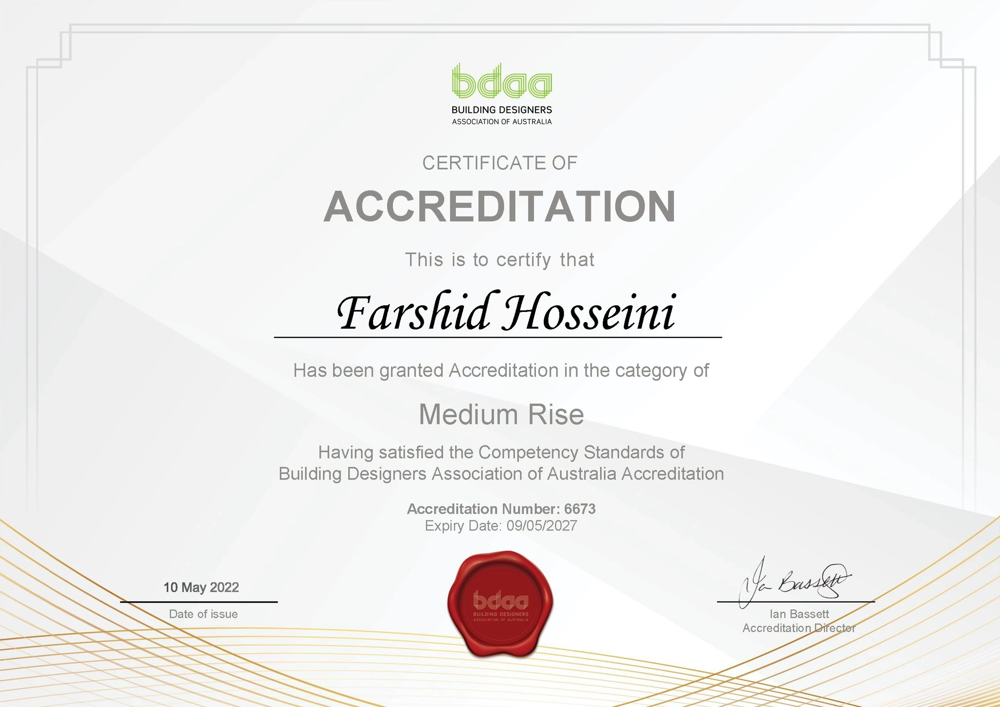
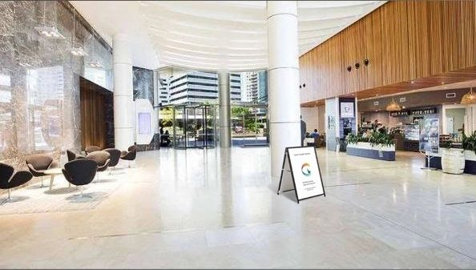
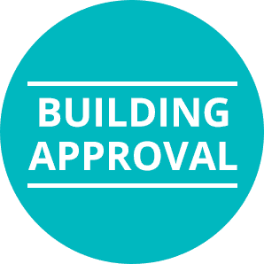

Led by Fred Hos with experience across planning, interiors and sustainable design.
Green Design Sydney / Reimagined archive
Building Design Services - Project Management
Design solutions that combine beauty, functionality, and sustainability.
Exclusive annual intake for high-focus residential commissions in Greater Sydney.
Practice credentials and approvals experience carried across residential and medium-rise work.
01
Project archive
An archive-led front door, inspired by ABA's clarity but grounded in Green Design Sydney's material.
The current live site contains a broad project library, strong sector diversity and several standout residential narratives. This redesigned archive turns that material into a sharper, filterable experience with selected project highlights plus a broader title index from the live gallery.
Extended title index
More titles extracted from the live gallery.
The original site holds a much larger title bank than it presents well. This index keeps those project names visible while the curated cards above do the heavy visual lifting.
02
Exclusive luxury home projects
A focused residential program rather than a volume pipeline.
The live Green Design Sydney homepage already contains the strongest positioning statement on the site: a tightly curated luxury home offer with only two houses taken on per year. This redesign gives that message the space and precision it deserves.
Secure Your PlacePast masterpieces
- Harbourfront Estate - Mosman A modern architectural marvel designed for seamless indoor-outdoor living and timeless elegance.
- Hillside Mansion - Vaucluse An iconic residence with panoramic views, sustainable design elements and bespoke luxury interiors.
- Riverside Retreat - Hunters Hill A peaceful sanctuary blending contemporary design with natural surroundings for sophisticated living.
Eligibility criteria
Client
- Vision for a unique and architecturally significant home
- Commitment to high-end materials and craftsmanship
- Willingness to engage in a fully collaborative process
- Construction budgets starting from $5M AUD
Location
- Prestigious sites within Greater Sydney
- Waterfront, hillside or panoramic attributes
- Suitable zoning and planning potential
- Long-term value and legacy potential
Approved clients also receive entry into the Luxury Homeowners Club for ongoing support, property maintenance advice and private events.
Original luxury widget restored
Apply for Consideration Now
The live homepage only asks for an email before applying. This upgraded version keeps that simple first step and adds the project context Green Design Sydney would need to review a luxury commission quickly.
03
Services
Residential depth, specialist sectors and approvals guidance in one cleaner system.
The live site spreads its value across many separate pages. Here, those offers are reorganised into a consistent service set with stronger visual hierarchy, clearer summaries and better entry points for the right type of client.
04
Process
A calmer path from briefing and concept through approvals, documentation and delivery.
Green Design Sydney's existing interior and approvals pages already describe a solid process. This version consolidates that journey into a readable sequence that helps clients understand what happens next.
05
Practice
A more confident narrative for who Green Design Sydney is and why clients would trust the studio.
Green Design Sydney describes itself as a proactive building design and drafting office based in Sydney, known for competitive pricing, quick service and support through the council approval process. That substance is retained here, but framed with stronger typography, accreditation proof and a clearer story.
Philosophy
Build beautiful, progressive homes and buildings that make people comfortable while protecting the environment through design.
Mission
Communication is the key to success. The goal is to work closely with clients so vision, practicality and approval readiness align from the start.
Leadership
Fred Hos is presented on the current site as a committed designer with around two decades of experience across planning, sustainable and culturally relevant design, with a strong interior focus.



06
Resources
Practical guidance pulled from the live Granny Flats, Building Approvals and CDC / DA pages.
The current Resources page is effectively empty, so this redesign replaces it with the planning information that clients actually need during early decision-making.
Book first hour
One-hour free building design consultation.
We would love to hear from you and discuss your project. The original contact page promises a one-hour free building design consultation, so this rebuilt booking flow captures the visitor's details first, then opens the live Green Design Sydney booking calendar in a new tab.
07
Contact
A cleaner finish with direct actions instead of a dead-end footer.
The live contact page includes a free-estimate form, consultation booking, Seaforth address, phone numbers and weekday hours. This rebuilt contact section restores those essentials and keeps the original field set visible in one place.
Visit
18 Richmond Road, Seaforth NSW, Australia
Get directionsCall
02 8287 1288
0426 967 745
Call mobileHours
Monday - Friday: 8am - 5pm
Saturday - Sunday: Closed
One-hour free building design consultation available.Follow
See ongoing updates through the current social channels.
Instagram Facebook